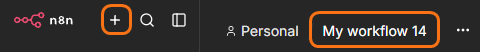
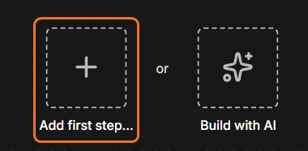
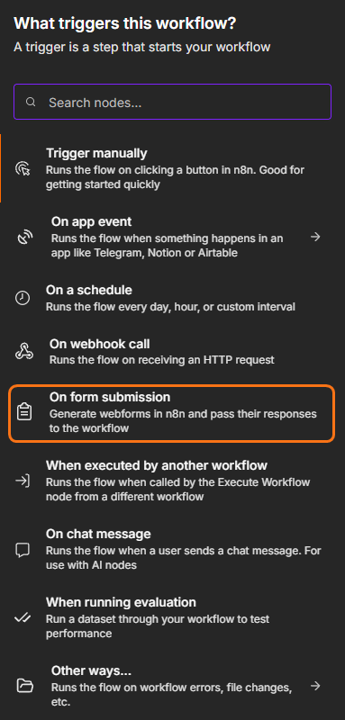
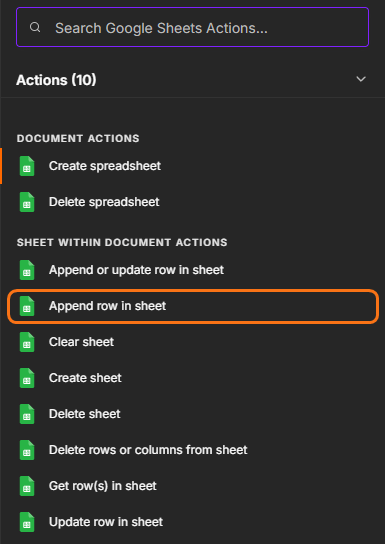
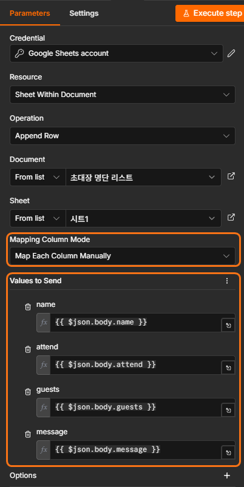
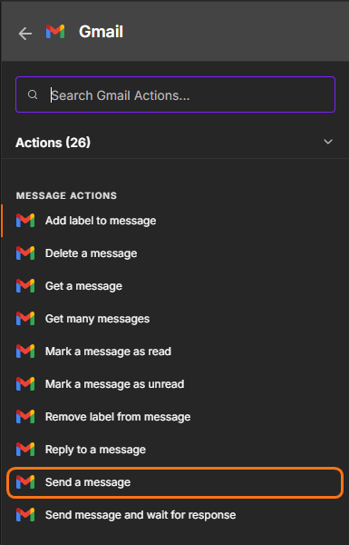
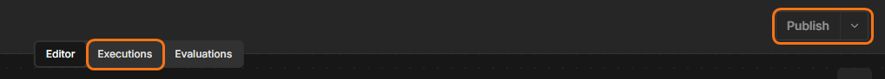
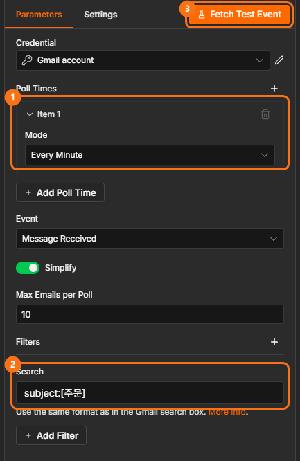
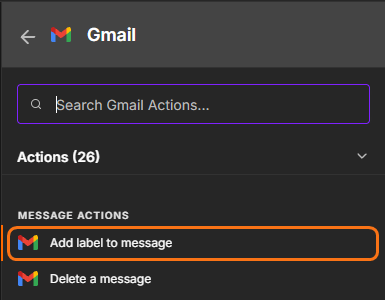
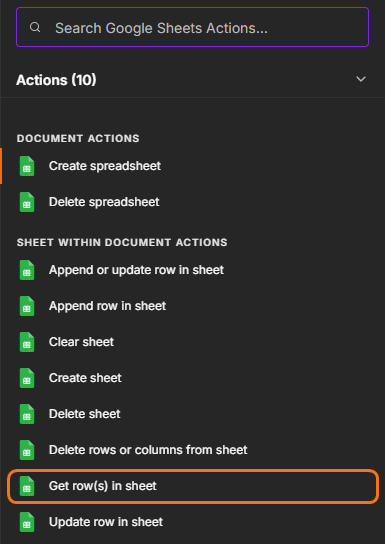

DAY 04AI 에이전트 · 트리거와 실무 Node
트리거와 실무 Node로 만드는 자동화
신청 폼이 들어올 때, 메일이 올 때, 아침 9시가 될 때 — 시작 방법이 다른 자동화 여섯 개를 만들어 봅니다. Google 시트 · Gmail · 캘린더 · 드라이브까지 실제 업무에서 자주 쓰는 Node를 함께 씁니다.
1.수업 구성
폼 · 메일 · 시간으로 시작하는 자동화를 직접 만들고, 상황에 맞는 트리거와 Node를 고를 수 있다.
Flow 1 신청 폼 · Flow 2 주문 메일 · Flow 3 아침 할 일 메일
Flow 4 예약 → 캘린더 · Flow 5 파일 → 드라이브 · Flow 6 단체 메일
기본 Flow Flow 1~4는 모두 함께, 더 만들기 Flow 5 · 6과 도전은 진도에 맞춰 이어 갑니다. Flow마다 새 Workflow로 처음부터 만듭니다.
AI_AGENT_DAY04를 하나 만들어 둡니다. Flow마다 탭을 하나씩 더해 씁니다. Google 시트 · Gmail 연결이 없다면 DAY 03 · Credential부터 만드세요.
2.트리거 — 언제 시작할까
Workflow의 첫 Node인 트리거가 "언제 시작할지"를 정합니다. 지금까지는 내가 실행 버튼을 눌렀다면(Manual), 오늘은 일이 생기면 저절로 시작되게 합니다.
| 트리거 | 이럴 때 시작 | 오늘 쓰는 곳 |
|---|---|---|
| Form Trigger | 누군가 n8n이 만든 입력 폼을 제출하면 | Flow 1 · 4 · 5 |
| Gmail Trigger | 내 메일함에 조건에 맞는 새 메일이 오면 | Flow 2 |
| Schedule Trigger | 정해진 시간이 되면 (매일 9시 등) | Flow 3 |
| Manual Trigger | 내가 실행 버튼을 누르면 | Flow 6 |
만드는 동안에는 테스트 버튼으로 확인하고, 다 만들면 오른쪽 위 Publish(켜기)를 눌러야 실제로 저절로 시작됩니다. 수업이 끝나면 쓰지 않는 Workflow는 다시 꺼 두세요.
3.Flow 1 · 상담 신청 폼 → 시트 → 접수 메일
기본 FlowForm Trigger · Google Sheets · Gmail
상황 — 상담 신청을 받으면 명단에 쌓고, 신청자에게 접수 안내를 보내고 싶다. 신청 페이지는 n8n이 만들어 줍니다.
준비 — 시트 AI_AGENT_DAY04 아래쪽 +로 탭을 하나 만들고 이름을 상담신청으로 바꾼 뒤, A1 칸에 아래를 붙여 넣습니다.
STEP 1신청 폼 만들기
- n8n 왼쪽 위 + → Workflow를 눌러 새 Workflow를 만듭니다.
- 왼쪽 위 이름(My workflow)을 눌러
DAY04_F1_상담신청으로 바꿉니다.
왼쪽 상자가 1번의 +, 오른쪽 상자가 2번의 이름입니다. - 가운데 +를 누르고 검색창에
form을 입력 → On form submission을 고릅니다.
가운데 Add first step 
크게 보기검색하지 않고 목록에서 골라도 됩니다 - 아래 표대로 설정합니다. 항목은 Add Form Element를 눌러 하나씩 더합니다.


| 항목 | 설정 |
|---|---|
| Form Title | 상담 신청 |
| Form Element 1 | Field Name 이름 · Element Type Text · Required Field 켜기 |
| Form Element 2 | Field Name 이메일 · Element Type Email · Required Field 켜기 |
| Form Element 3 | Field Name 상담분야 · Element Type Dropdown · Add Field Option으로 수업 결제 기타 · Required Field 켜기 |
| Form Element 4 | Field Name 문의내용 · Element Type Textarea · Required Field 켜기 |
- 위쪽 Execute step을 누릅니다. 폼이 새 창으로 열리면 내 이름 · 내 메일 주소로 제출합니다.
[ On form submission ]
오른쪽 OUTPUT에 이렇게 보이면 성공입니다.
이름 / 이메일 / 상담분야 / 문의내용 / submittedAt
STEP 2시트에 한 줄 저장하기
- Form 설정 창을 닫고, Node 오른쪽 + →
sheets검색 → Google Sheets → Append row in sheet를 고릅니다. - 아래 표대로 설정합니다.


크게 보기

크게 보기| 항목 | 설정 |
|---|---|
| Credential to connect with | DAY 03에 만든 Google Sheets 연결 |
| Document | From list → AI_AGENT_DAY04 |
| Sheet | From list → 상담신청 |
| Mapping Column Mode | Map Each Column Manually |
- 아래쪽에 시트의 열 이름 다섯 칸이 나타납니다. 왼쪽 INPUT에서 같은 이름의 값을 각 칸으로 끌어다 놓습니다. 놓고 나면 칸에 이렇게 보여야 합니다.
| 시트 열 | 칸에 들어갈 값 |
|---|---|
| 이름 | {{ $json.이름 }} |
| 이메일 | {{ $json.이메일 }} |
| 상담분야 | {{ $json.상담분야 }} |
| 문의내용 | {{ $json.문의내용 }} |
| 신청시각 | {{ $json.submittedAt }} |
- Execute step을 누릅니다.
[ On form submission ] → [ Google Sheets ]
시트 상담신청 탭 2행에 방금 제출한 내용이 한 줄 들어갔으면 성공입니다.
STEP 3신청자에게 접수 메일 보내기
- Google Sheets 오른쪽 + →
gmail검색 → Gmail → Send a message를 고릅니다.
크게 보기 - 아래 표대로 설정합니다. 이름 · 이메일 · 상담분야는 왼쪽 INPUT에서 끌어다 놓고, 나머지 글자는 직접 씁니다.

| 항목 | 설정 |
|---|---|
| Credential to connect with | DAY 03에 만든 Gmail 연결 |
| To | {{ $json.이메일 }} |
| Subject | 상담 신청이 접수되었습니다 |
| Email Type | Text |
| Message | {{ $json.이름 }}님, {{ $json.상담분야 }} 상담 신청을 받았습니다. 담당자가 곧 연락드리겠습니다. |
- Execute step을 누릅니다.
[ On form submission ] → [ Google Sheets ] → [ Gmail ]
내 메일함에 "상담 신청이 접수되었습니다" 메일이 오고, 본문에 내 이름과 상담분야가 들어 있으면 성공입니다.
메일 끝에 붙는 n8n 안내 문구를 없애려면 Gmail Node 아래 Add option → Append n8n Attribution을 끕니다.
STEP 4켜서 진짜 신청 페이지로 쓰기
- 오른쪽 위 Publish를 누릅니다. 실행 기록은 가운데 위 Executions에서 봅니다.

크게 보기 - On form submission Node를 열고 위쪽에서 Production URL을 골라 주소를 복사합니다.
- 새 브라우저 탭에 주소를 붙여 넣어 열고, 다른 이름으로 한 번 더 제출합니다.

시트에 새 줄이 하나 더 생기고 접수 메일이 한 통 더 오면 완성입니다. Production URL은 다른 사람에게 보내도 되는 진짜 신청 페이지입니다.
4.Flow 2 · 주문 메일 자동 기록 · 라벨
기본 FlowGmail Trigger · Google Sheets · Gmail(라벨)
상황 — 제목에 [주문]이 붙은 메일이 오면 주문 기록 시트에 남기고, 메일함에서 찾기 쉽게 라벨을 붙이고 싶다.
준비
- 시트에 탭
주문메일을 만들고 A1 칸에 아래를 붙여 넣습니다. - Gmail 왼쪽 메뉴 맨 아래 라벨 옆 +를 눌러 라벨
자동화-주문을 만듭니다. - 내 메일 주소로 제목
[주문] 머그컵 2개, 본문토요일까지 받을 수 있을까요?인 메일을 하나 보내 둡니다.
STEP 1[주문] 메일을 기다리는 트리거
- 새 Workflow를 만들고 이름을
DAY04_F2_주문메일로 바꿉니다. - 가운데 + →
gmail검색 → Gmail → Triggers의 On message received를 고릅니다. - 아래 표대로 설정합니다. Search 칸은 Add Filter → Search를 눌러야 나타납니다.
| 항목 | 설정 |
|---|---|
| Credential to connect with | Gmail 연결 |
| Poll Times | Mode Every Minute |
| Simplify | 켜기 (기본값) |
| Filters → Search | subject:[주문] |


크게 보기- Fetch Test Event를 누릅니다.
[ Gmail Trigger ]
OUTPUT에서 준비 3번에 보낸 메일이 보이고, 아래 세 값을 찾을 수 있으면 성공입니다.
From 보낸 사람 Subject [주문] 머그컵 2개 snippet 토요일까지 받을 수 있을까요?
조건(subject:[주문])을 꼭 겁니다. 조건 없이 켜 두면 개인 메일까지 모두 시트에 기록됩니다.
STEP 2주문 기록 시트에 저장하기
- Gmail Trigger 오른쪽 + → Google Sheets → Append row in sheet
- Document는
AI_AGENT_DAY04, Sheet는주문메일, Mapping Column Mode는 Map Each Column Manually로 고릅니다. - 세 칸에 INPUT 값을 끌어다 놓습니다.
| 시트 열 | 칸에 들어갈 값 |
|---|---|
| 보낸사람 | {{ $json.From }} |
| 제목 | {{ $json.Subject }} |
| 내용미리보기 | {{ $json.snippet }} |
- Execute step을 누릅니다.
[ Gmail Trigger ] → [ Google Sheets ]
시트 주문메일 탭에 보낸 사람 · 제목 · 미리보기가 한 줄 들어가면 성공입니다.
STEP 3메일에 라벨 붙이기
- Google Sheets 오른쪽 + → Gmail → Add label to message를 고릅니다.

크게 보기 - 왼쪽 INPUT 위쪽의 Node 이름 칸을 눌러 Gmail Trigger로 바꿉니다. 바로 앞 Node(시트)에는 메일 번호가 없기 때문입니다.
- Gmail Trigger의 id를 Message ID 칸으로 끌어다 놓습니다.

| 항목 | 설정 |
|---|---|
| Message ID | {{ $('Gmail Trigger').item.json.id }} |
| Label Names or IDs | 목록에서 자동화-주문 |
- Execute step을 누릅니다.
[ Gmail Trigger ] → [ Google Sheets ] → [ Gmail: Add label ]
Gmail에서 그 메일에 자동화-주문 라벨이 붙어 있으면 성공입니다.
STEP 4켜고 새 주문 메일로 확인하기
- 오른쪽 위 Publish를 누릅니다.
- 제목
[주문] 텀블러 1개로 메일을 하나 더 보내고 1~2분 기다립니다. - Workflow 화면 위쪽 Executions를 눌러 실행 기록이 생겼는지 봅니다.
시트에 새 줄이 생기고, 새 메일에도 라벨이 붙어 있으면 완성입니다.
5.Flow 3 · 매일 아침 할 일 메일
기본 FlowSchedule Trigger · Google Sheets · Filter · Aggregate · Gmail
상황 — 매일 아침 9시, 할 일 시트에서 아직 끝나지 않은 일만 모아 한 통의 메일로 받고 싶다.
조건에 맞는 줄만 다음으로 보내고 나머지는 버립니다. IF와 달리 길은 하나입니다.
여러 줄을 한 묶음으로 합칩니다. 그래야 메일이 줄마다가 아니라 한 통만 갑니다.
준비 — 시트에 탭 할일을 만들고 A1 칸에 붙여 넣기
STEP 1매일 9시 트리거
- 새 Workflow를 만들고 이름을
DAY04_F3_아침메일로 바꿉니다. - 가운데 + →
schedule검색 → On a schedule(Schedule Trigger)을 고릅니다.
| 항목 | 설정 |
|---|---|
| Trigger Interval | Days |
| Days Between Triggers | 1 |
| Trigger at Hour | 9am |
| Trigger at Minute | 0 |
[ Schedule Trigger ]
STEP 2할 일 불러오기
- Schedule Trigger 오른쪽 + → Google Sheets → Get row(s) in sheet

크게 보기 - Document는
AI_AGENT_DAY04, Sheet는할일로 고릅니다. - Execute step을 누릅니다.

[ Schedule Trigger ] → [ Google Sheets ]
OUTPUT 위에 5 items가 보이면 성공입니다. 시트의 다섯 줄이 모두 들어왔습니다.
STEP 3진행중인 일만 남기기 — Filter
- Google Sheets 오른쪽 + →
filter검색 → Filter - Conditions의 왼쪽 칸(value1)에 INPUT의 상태를 끌어다 놓습니다.
- 가운데 조건을 눌러 String → is equal to를 고르고, 오른쪽 칸에
진행중을 씁니다.
| 칸 | 값 |
|---|---|
| value1 | {{ $json.상태 }} |
| 조건 | String → is equal to |
| value2 | 진행중 |
- Execute step을 누릅니다.
[ Schedule ] → [ Google Sheets ] → [ Filter ]
OUTPUT이 3 items로 줄면 성공입니다. 완료된 두 줄이 빠졌습니다.
STEP 4세 줄을 한 묶음으로 — Aggregate
- Filter 오른쪽 + →
aggregate검색 → Aggregate - Aggregate는 Individual Fields 그대로 두고, Input Field Name 칸에
할일을 직접 씁니다. (끌어다 놓지 않습니다. 여기는 값이 아니라 열 이름을 적는 칸입니다.) - Execute step을 누릅니다.
[ Schedule ] → [ Google Sheets ] → [ Filter ] → [ Aggregate ]
OUTPUT이 1 item이 되고, 그 안에 할 일 세 개가 묶여 있으면 성공입니다.
할일 ├ 수업 자료 인쇄 ├ 수강생 명단 정리 └ 다음 달 일정 공지
STEP 5나에게 메일 한 통
- Aggregate 오른쪽 + → Gmail → Send a message
- 아래 표대로 설정합니다. Message는 칸을 Expression으로 바꾼 뒤 그대로 붙여 넣습니다.
| 항목 | 설정 |
|---|---|
| To | 내 메일 주소 |
| Subject | 오늘 남은 할 일 |
| Email Type | Text |
| Message | 오늘 남은 일: {{ $json.할일.join(', ') }} |
.join(', ')은 묶인 할 일 세 개를 쉼표로 이어 한 문장으로 만들어 줍니다.
- 지금 확인하려면 아래쪽 주황색 Execute 버튼을 누릅니다.
- 매일 받으려면 오른쪽 위 Publish를 누릅니다.
[ Schedule ] → [ Google Sheets ] → [ Filter ] → [ Aggregate ] → [ Gmail ]
메일이 한 통만 오고, 본문에 진행중인 일 세 개만 있으면 완성입니다. 시트에서 상태 하나를 완료로 바꾸고 다시 실행해 보세요.
6.Flow 4 · 예약 폼 → 캘린더 일정
기본 FlowForm Trigger · Google Calendar · Gmail
상황 — 상담 예약을 받으면 내 Google 캘린더에 일정이 바로 생기고, 예약자에게 확인 메일이 가게 하고 싶다.
STEP 1예약 폼 만들기
- 새 Workflow를 만들고 이름을
DAY04_F4_상담예약으로 바꿉니다. - 가운데 + →
form검색 → On form submission
| 항목 | 설정 |
|---|---|
| Form Title | 상담 예약 |
| Form Element 1 | 이름 · Text |
| Form Element 2 | 이메일 · Email |
| Form Element 3 | 예약 날짜 · Date |
| Form Element 4 | 요청 사항 · Textarea |
- Execute step → 열린 폼에 내 이름 · 내 메일 · 이번 주 날짜 하나로 제출합니다.
[ On form submission ]
OUTPUT에 예약 날짜가 2026-11-05처럼 날짜 모양으로 보이면 성공입니다.
STEP 2캘린더에 일정 만들기
- Form 오른쪽 + →
calendar검색 → Google Calendar → Create an event - Credential to connect with에서 Create new credential → Sign in with Google로 캘린더 연결을 처음 한 번 만듭니다.
- 아래 표대로 설정합니다. 예약 날짜 · 이름 · 요청 사항은 INPUT에서 끌어다 놓습니다.
| 항목 | 설정 |
|---|---|
| Calendar | From list → 내 메일 주소(기본 캘린더) |
| Start | {{ $json['예약 날짜'] }} |
| End | {{ $json['예약 날짜'] }} |
| Additional Fields → All Day | Yes |
| Additional Fields → Summary | 상담 예약 — {{ $json.이름 }} |
| Additional Fields → Description | {{ $json['요청 사항'] }} |
이름에 띄어쓰기가 있는 값(예약 날짜, 요청 사항)은 끌어다 놓으면 $json['예약 날짜']처럼 따옴표 모양으로 들어갑니다. 정상입니다.
- Execute step을 누릅니다.
[ On form submission ] → [ Google Calendar ]
Google 캘린더의 그 날짜에 "상담 예약 — 내 이름" 하루 일정이 생기면 성공입니다.
STEP 3예약자에게 확인 메일
- Google Calendar 오른쪽 + → Gmail → Send a message
- 왼쪽 INPUT 위쪽 Node 이름 칸을 On form submission으로 바꿉니다. 이메일 · 이름은 폼에 있기 때문입니다.
- 아래 표대로 끌어다 놓고 씁니다.
| 항목 | 설정 |
|---|---|
| To | {{ $('On form submission').item.json.이메일 }} |
| Subject | 상담 예약이 확정되었습니다 |
| Email Type | Text |
| Message | {{ $('On form submission').item.json.이름 }}님, {{ $('On form submission').item.json['예약 날짜'] }} 상담 예약이 확정되었습니다. |
- Execute step을 누릅니다.
[ On form submission ] → [ Google Calendar ] → [ Gmail ]
내 메일함에 예약 날짜가 들어간 확정 메일이 오면 성공입니다.
STEP 4켜고 여러 번 예약해 보기
- Publish를 누릅니다.
- Form Node의 Production URL을 새 탭에서 열어 다른 날짜로 두세 번 예약합니다.
캘린더에 날짜마다 일정이 생기고, 일정을 열면 요청 사항이 설명에 들어 있으면 완성입니다.
7.Flow 5 · 파일 제출 폼 → 드라이브 저장
더 만들기Form Trigger(파일) · Google Drive · Google Sheets
상황 — 과제나 서류를 폼으로 받으면 드라이브 폴더에 모으고, 누가 냈는지 링크와 함께 시트에 남기고 싶다.
준비 — Google 드라이브에 폴더 제출파일을 만들고, 시트에 탭 제출기록을 만들어 A1 칸에 붙여 넣기
STEP 1파일을 받는 폼
- 새 Workflow
DAY04_F5_과제제출을 만들고 On form submission을 추가합니다.
| 항목 | 설정 |
|---|---|
| Form Title | 과제 제출 |
| Form Element 1 | 이름 · Text |
| Form Element 2 | 첨부파일 · File |
- Execute step → 아무 이미지나 PDF 하나를 올려 제출합니다.
- OUTPUT 위쪽에서 Binary 탭을 눌러 파일 이름표를 확인합니다.
[ On form submission ]
Binary 탭에 파일이 보이면 성공입니다. 파일 위에 적힌 이름표를 메모해 둡니다.
첨부파일 ← 이 이름표를 다음 STEP에 씁니다
STEP 2드라이브 폴더에 올리기
- Form 오른쪽 + →
drive검색 → Google Drive → Upload file - Credential은 Create new credential → Sign in with Google로 드라이브 연결을 만듭니다.
| 항목 | 설정 |
|---|---|
| Input Data Field Name | STEP 1에서 메모한 이름표 (예: 첨부파일) |
| File Name | 비워 두기 — 올린 파일 이름이 그대로 쓰입니다 |
| Parent Drive | My Drive |
| Parent Folder | From list → 제출파일 |
- Execute step을 누릅니다.
[ On form submission ] → [ Google Drive ]
드라이브 제출파일 폴더에 파일이 생기고, OUTPUT에 name · webViewLink가 보이면 성공입니다.
STEP 3누가 냈는지 시트에 남기기
- Google Drive 오른쪽 + → Google Sheets → Append row in sheet (Sheet는
제출기록) - 파일이름 · 링크는 바로 앞 Drive에서, 이름은 INPUT의 Node 이름 칸을 On form submission으로 바꿔 끌어다 놓습니다.
| 시트 열 | 칸에 들어갈 값 |
|---|---|
| 이름 | {{ $('On form submission').item.json.이름 }} |
| 파일이름 | {{ $json.name }} |
| 링크 | {{ $json.webViewLink }} |
- Execute step을 누릅니다.
[ On form submission ] → [ Google Drive ] → [ Google Sheets ]
시트의 링크를 눌렀을 때 올린 파일이 열리면 완성입니다.
8.Flow 6 · 명단 전원에게 안내 메일
더 만들기Manual Trigger · Google Sheets · Gmail
상황 — 명단에 있는 사람 모두에게 이름을 넣은 개별 안내 메일을 한 번에 보내고 싶다.
준비 — 시트에 탭 명단을 만들어 A1 칸에 붙여 넣고, 내아이디를 내 Gmail 아이디로 바꿉니다. 다섯 통 모두 내 메일함으로 옵니다.
STEP 1명단 불러오기
- 새 Workflow
DAY04_F6_단체메일을 만들고 가운데 + → Trigger manually를 고릅니다. - 오른쪽 + → Google Sheets → Get row(s) in sheet (Sheet는
명단) - Execute step을 누릅니다.
[ Manual Trigger ] → [ Google Sheets ]
OUTPUT에 5 items가 보이면 성공입니다.
STEP 2한 명씩 메일 보내기
- Google Sheets 오른쪽 + → Gmail → Send a message
| 항목 | 설정 |
|---|---|
| To | {{ $json.이메일 }} |
| Subject | [안내] 다음 주 수업 일정 |
| Email Type | Text |
| Message | {{ $json.이름 }}님, 다음 주 수업은 화요일 저녁 7시입니다. |
- 아래쪽 주황색 Execute 버튼을 누릅니다.
[ Manual Trigger ] → [ Google Sheets ] → [ Gmail ]
Gmail Node 위에 5 items가 보이고, 메일함에 이름이 다른 메일 다섯 통이 오면 완성입니다.
Node는 하나인데 줄이 다섯이면 다섯 번 실행됩니다. 명단이 100명이어도 같은 Workflow입니다.
9.막혔을 때
| 이런 모습이면 | 확인할 것 |
|---|---|
| 폼을 냈는데 Workflow가 안 돎 | 테스트 중이면 Execute step을 누른 뒤 열린 폼으로 냈는지, 실제 주소로 냈다면 Publish했는지 |
| Gmail Trigger가 메일을 못 찾음 | Search 조건과 메일 제목이 맞는지([주문] 대괄호까지), Fetch Test Event를 다시 눌렀는지 |
| 9시가 됐는데 메일이 안 옴 | Publish했는지, n8n 설정의 시간대(Timezone)가 서울인지 |
| 캘린더 · 드라이브 Node 오류 | 서비스마다 Credential이 따로 필요합니다. Sign in with Google로 그 서비스용을 만들었는지 |
| 드라이브 업로드에서 파일이 없다고 나옴 | Input Data Field Name이 Form OUTPUT의 Binary 탭 이름표와 똑같은지 |
| 메일이 여러 통 감 / 한 통만 감 | 앞 Node의 items 수를 봅니다. 묶으려면 Aggregate, 한 명씩이면 묶지 않기 |
문제 해결 루틴
ChatGPT에 물을 때는 Workflow 전체 · 문제 Node 설정 · OUTPUT/오류를 캡처해 "무엇을 만들고 있고, 어디까지 되고, 무엇이 안 되는지"를 말합니다.
10.빠른 수강생 도전 (선택)
빠른 수강생 도전 · 필수 아님
구조만 보고 직접 만들어 보세요. 처음 보는 Node는 n8n에서 이름으로 검색하면 됩니다.
Schedule(매일 8시) → RSS Read → Limit(5개) → Aggregate(title) → Gmail
RSS 주소 예: https://news.google.com/rss?hl=ko&gl=KR&ceid=KR:ko
Form(회의명 · 참석자 · 내용) → Google Docs Create → Google Docs Update(내용 넣기) → 시트에 문서 링크 기록
Gmail Trigger(제목에 [서류], Download Attachments 켜기) → Google Drive Upload → 나에게 "보관 완료" 메일
Schedule(매주 월요일) → Sheets Get rows → Filter(이메일이 비어 있는 줄) → Aggregate → 나에게 "확인 필요" 메일
11.오늘 내용 정리 & 다음 수업
| 오늘 만든 것 | 시작 | 새로 쓴 Node |
|---|---|---|
| 상담 신청 → 시트 · 접수 메일 | Form | Form Trigger |
| 주문 메일 기록 · 라벨 | Gmail | Gmail Trigger · 라벨 붙이기 |
| 아침 할 일 메일 | Schedule | Schedule Trigger · Filter · Aggregate |
| 예약 → 캘린더 | Form | Google Calendar |
| 파일 → 드라이브 | Form | Google Drive |
| 명단 전원 메일 | Manual | — (줄마다 실행) |
오늘 Flow들은 들어온 그대로 저장하고 보냈습니다. 다음 시간에는 IF · Switch로 상황에 따라 길을 나누고, Gemini(AI)가 문의를 읽고 판단하게 합니다. Node가 7~10개인 복잡한 Flow를 만듭니다.